Lab 1 Geodatabase, data handling, and management
Written by
Paul Pickell
Lab Overview
The aim of this lab is to design and build geodatabase, as well as organize its contents in an orderly manner. In addition, students will learn how to access the data they need in open-source geographic databases on the web and to process the data to obtain the desired study area.
Learning Objectives
- Learn how to design geodatabases based on topics and needs
- Familiar with building databases, organizing data, and linking data sets
- Learn how to access data in open-source databases on the web
- Understand the operation of simple cropping of data as needed
- Get to know more geodatabases
Task 1: Geodatabase designing and Geographical data collation
In this task, we will review what the geodatabase contains and learn how to design your own geodatabase based on project requirements and objectives in ArcGIS Pro.
Step 1: Start ArcGIS Pro. Under the New header, select Catalog. Name the project “Lab2”. When ArcGIS Pro opens a new Catalog window, navigate to your Lab2 folder.
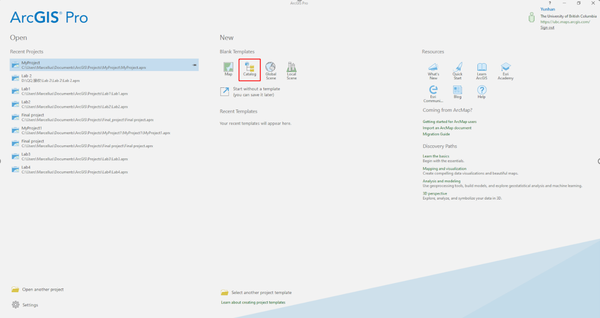
Step 2: Download the zipped (.zip) lab data from GitHub, unzip it, and move it into your project folder, typically C:\Users\YourUsername\Documents\ArcGIS\Projects\Lab2.
Step 3: Look at your shapefiles in ArcGIS Pro. You have seven shapefiles in your data folder. Three different kinds of icons are shown in front of shapefile names. These indicate what type of data (point, line, or polygon) is stored within a shapefile. For example, the H_FIRE_PNT_point shapefile is composed of points, the GM_MetroVancouverBoundary shapefile is composed of lines, and the CLAB_NATPK_polygon shapefile is a polygon.
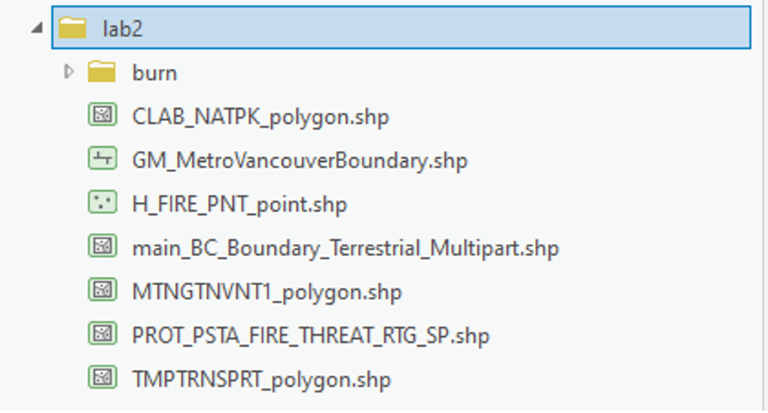
Step 4: Open a new Map. Under the Insert tab on the top ribbon, click New Map. Before adding any layer, you need to make sure that the coordinate system of the map gives an accurate projection of your study area. For this lab we will focus on BC, so we will use the coordinate system that best reproduces BC. In the Map interface, right-click “Map” in the contents, select properties, and in the pop-up window, select Coordinate Systems. If your “Current XY” shows “NAD 1983 BC Environment Albers”, you do not need to make any changes, if not, search for the above coordinate system in the search bar below, select it and then click “OK” to complete the changes.
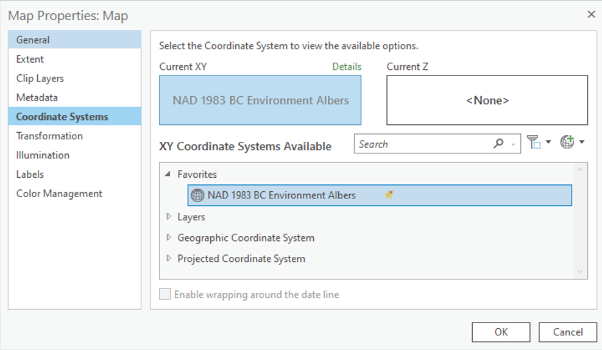
Using the Catalog pane, right-click the “BC_Boundary_Terrestrial_Mutipart.shp” shapefile and select Add to Map. Do the same for other shapefiles. You may notice that the names of these files are not in a uniform format, and some words may be abbreviated. This can cause some inconvenience when dealing with data from different sources. Therefore, it is necessary to format the data names to be processed uniformly to improve efficiency. In general, you can standardize the names of data according to your preferences and further explain the meaning of the names through a data dictionary or editing metadata. You can rename the layer in your map by right-clicking it and selecting properties, then change the name in general. Note that this does not change its name in the folder.
Q1: Choose the name you think is most appropriate for each shapefile. (Historical_fire_point, BC_boundary, Metro_Vancouver_boundary, National_parks, Highway_and_railway, Goat_inventory, Fire_threat_rate)
Step 5: By default, the Lab2.gdb geodatabase created with the new project is set as the “default geodatabase”. This means that whenever you run a tool or search for data, ArcGIS Pro will automatically default to the location of this geodatabase unless you specify otherwise. If you navigate to Project > Databases in the Contents pane, you should see a geodatabase with a little house. The house indicates which geodatabase is set as the default geodatabase for the project. Only one geodatabase can be the default at any given time.

Step 6: You may find that not all shapefiles are related to fire. Categorizing different data according to topics can also significantly improve our work efficiency.
Q2: Which data do you think are useful for a project on fires in BC?
Step 7: Right-click the lab2.gdb in Catalog, select import, then select Feature Class(es). Select all the features you think are suitable for fire in BC in input features, then click “Run”.
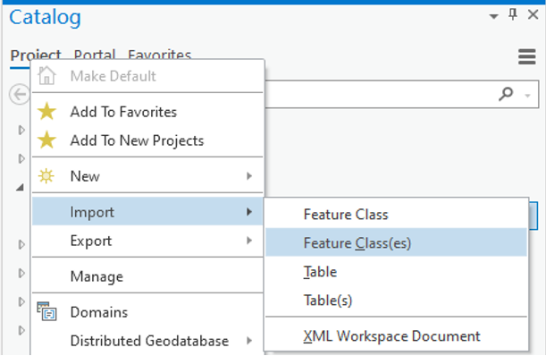
You can also finish this step using the “Feature Class To Geodatabase” tool. To do this, open up the Geoprocessing pane by selecting Tools under the Analysis tab of the top ribbon. Then search “Feature Class To Geodatabase”. Do the same thing as above, but you need to choose the Output Geodatabase as fire_bc.gdb manually.
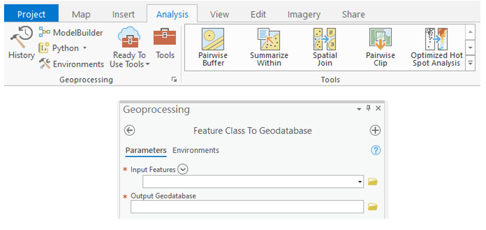
Task 2: Vector Data Processing
Next we will practice processing vector data to make it usable.
Step 1: Sometimes, the data you download will not fit the needs for direct use. Therefore, you need to do some simple processing of the data to make it meet your needs. In this section, we process the directly downloaded raw vector and raster data separately to make it easy to use.
Step 2: Here, we only examine fires after 2010. Therefore, we want a feature class that only contains data after 2010(including 2010). To do this, first right-click on the “Historical_fire_point” layer in the context, select “Data” and then select “Export Features”.
You can notice that the first two lines in the opened dialog box are already filled in automatically. Name the exported file as “Historical_fire_point_2010”. Then, select “FIRE_YEAR” in the drop-down list below, then select “is greater than or equal to”, and select “2010”. Click “OK”.
A new point feature class appears in your geodatabase, which you may need to refresh to see. It is also automatically added to the contents pane, and you can right-click on it and select the attribute table to view the new data in detail.
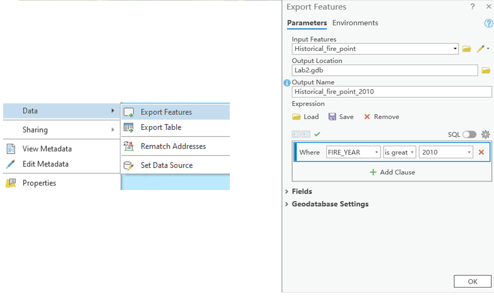
A brief description of the tool can be obtained by clicking on the question mark on the upper right-hand side. This is a good way to understand how the tool should be used.
Task 3: Raster Data Download
Step 1: Downloading data from open-source sites is not so easy, you have to learn to search and pick the type of data you need, the area, and the time. Let’s try one of the sites provided by NASA as an example. First, open the home page of the website (https://lpdaac.usgs.gov/). Then select Data in the top blue column and select Search Data Catalog in the drop-down list that appears. Type “burned” in the search box of the newly opened website and this will return several results. Select the product “MCD64A1 v006”.
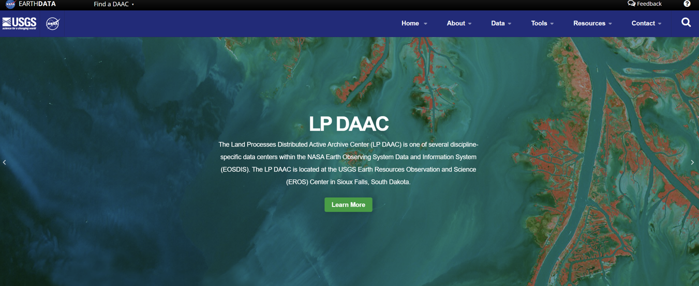
Then select Data in the top blue column and select Search Data Catalog in the drop-down list that appears.
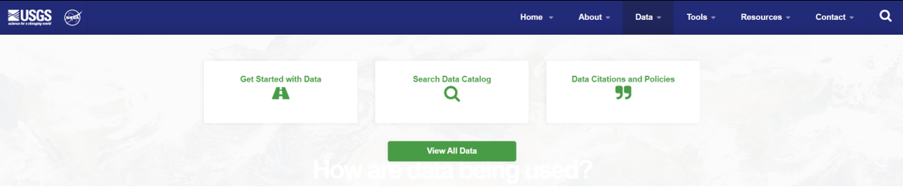
Type “burned” in the search box of the newly opened website and this will return several results. Select the product “MCD64A1 v006”.
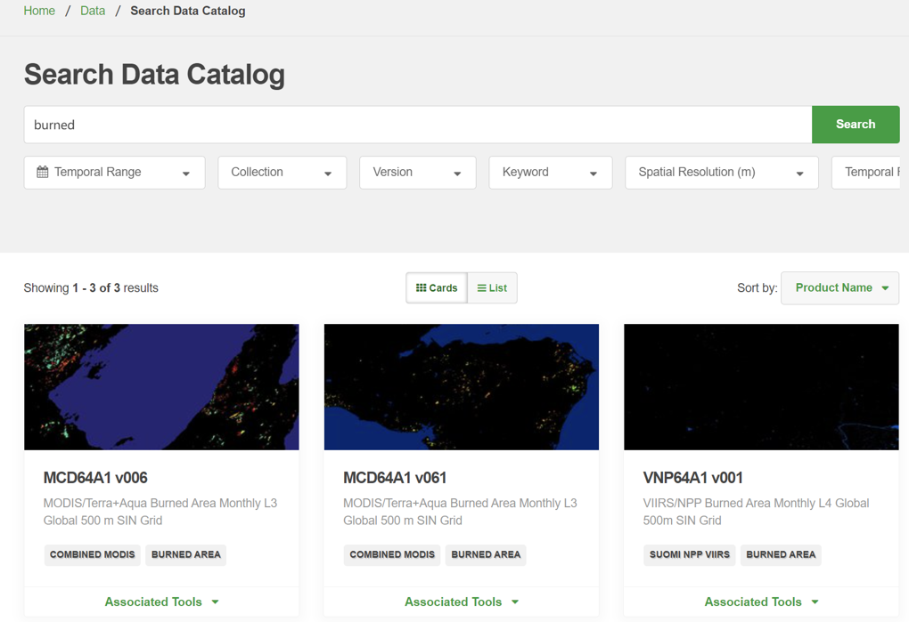
Step 2: You will see a page as shown below, select access data to get the data. You will see many options, here we try to use the “NASA Earthdata Search” tool. This is a more intuitive way, but of course you are encouraged to try other ways as well.
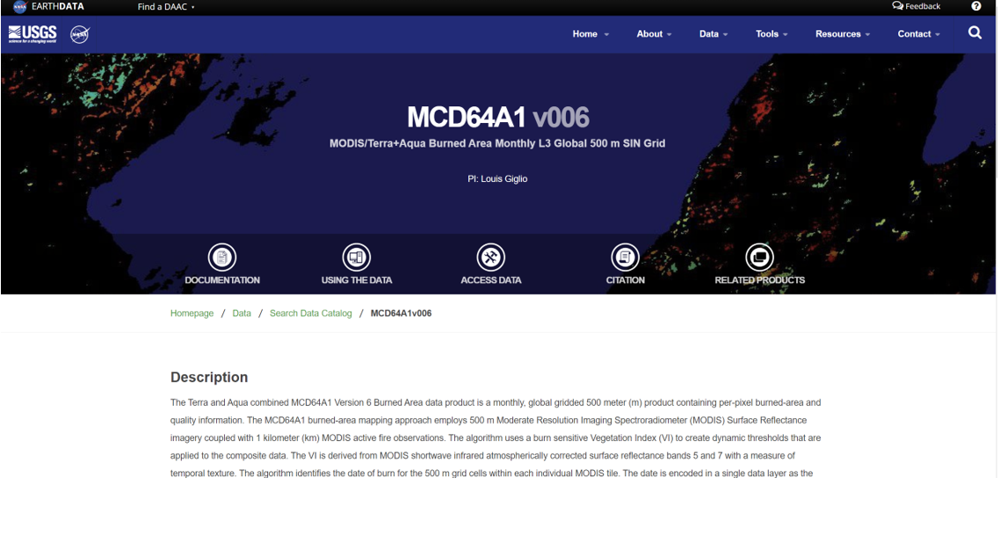
You will see many options, here we try to use the “NASA Earthdata Search” tool. This is a more intuitive way, but of course you are encouraged to try other ways as well. Note that please click on the download logo under the “Download Data” column to continue, rather than clicking on the tool name, which will lead you to the home page of the tool.
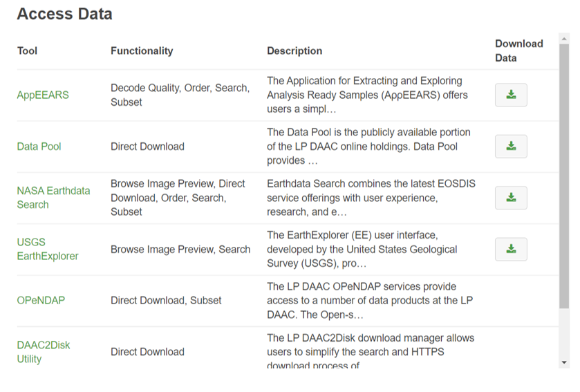
Step 3: The newly opened page is shown below. In order to download the data, you will usually need to log in, click on “Earthdata Login” in the top right corner of the screen to log in. For most people, you may need to register for an account. After registering and logging in, you will be redirected back to this screen. Click on the product that has been selected “MODIS/Terra+Aqua Direct Broadcast Burned Area Monthly L3 Global 500m SIN Grid V006”, which is the same as the product that was just displayed on the web page.
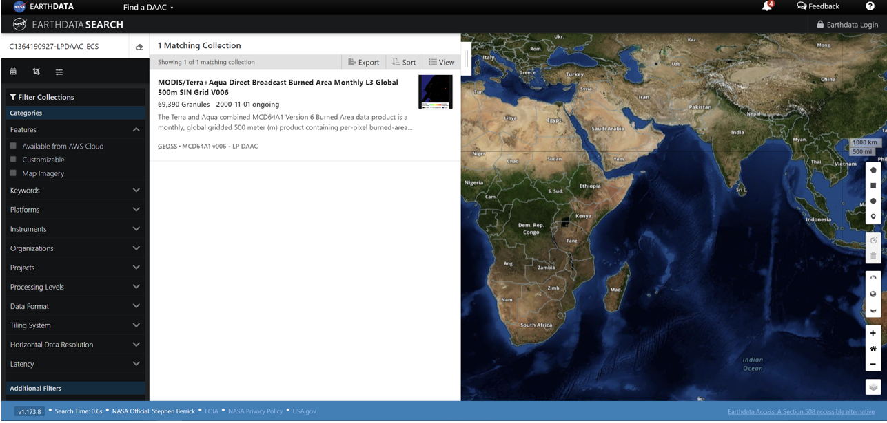
Step 4: You can see that a very large number of results appear, and this is all the data from the beginning of the collection of this product until now. We are only looking at data from a certain period this time, so we need filters to help us. To do this, select the data from August 1, 2018 to August 31, 2018 in the temporal column of the filter on the left.
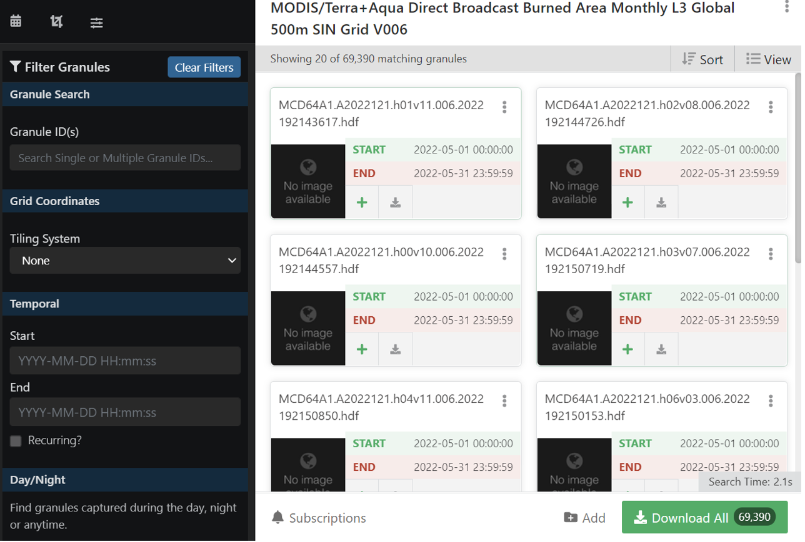
Q4: How many matching granules were obtained after using the filter?
Step 5: Take a closer look at the name of the product, it is a dataset that covers a global scope. So, let’s go ahead and select out the regions that contain BC. Then use the button on the right side of the screen to draw a graph containing the entire BC province. Don’t worry about drawing too big, we will cut out the BC province later.
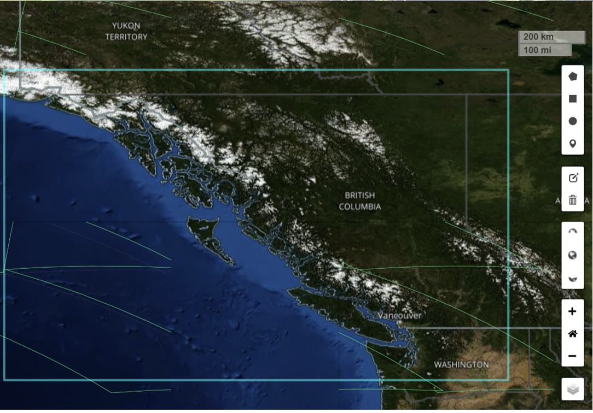
After doing this, you can see a significant reduction in the number of results. Then you can click “Download All” in the bottom right corner of the dialog box. You will see the dialog box change to the one shown below, go ahead and click “Download Data”.
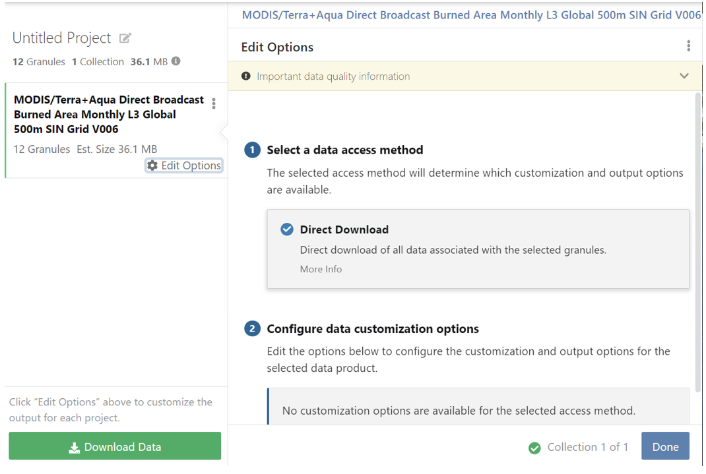
You will be directed to a new website where all the files are listed as shown in the image below. Since we don’t have many files, you can download them directly by clicking on these blue links one by one. Put these downloaded files into a folder called “Burned Area” and place it in the Lab2 folder.
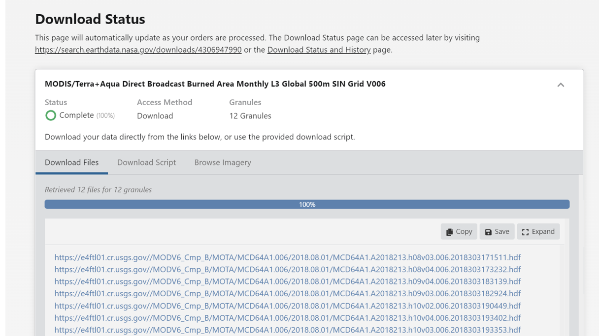
Task 4: Raster Data Processing
Step 1: Add the data from the Burned Area folder to the map to view them (Or you can use data that we offered to you in “Burned” folder). A dialog box may pop up when you join, select yes to continue. Note the range of these data, which will be needed later when selecting parameters for the tool. Right-click on the layer file in contents and select properties to see more information. Then in the popup dialog box, select the source tab to view raster information.
Q5: How many bands are there for each raster data?
Step 2: The raster data containing the BC fires was divided into several separate parts and we need to merge them into a larger raster data. We need a specific tool to help us with this operation. Under the Analysis tab on the top ribbon, click Tools. This will open the “Geoprocessing” tab (usually located on the right side of your screen). Then, in the search bar at the top, type “Mosaic”. This will return many search results, select “Mosaic To New Raster”.

Step 3: This will bring it to the tool’s window, which contains many parameters to be filled for running the tool. Parameters with red asterisks are required, those without are optional. First, for input raster, we click on the folder behind it, find the Burned Area folder and select all the files in it. Then, select Lab2.gdb as output location, and name the new raster as “Burn_Data”. Use the drop-down list to select the same spatial reference for raster as for BC_Boundary.
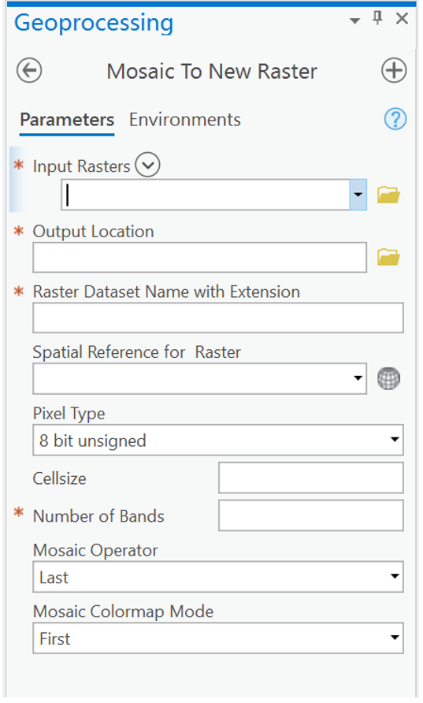
The following figure shows the specific description of the Pixel Type for this tool from the official ArcGIS Pro website (https://pro.arcgis.com/en/pro-app/2.8/tool-reference/data-management/mosaic-to-new-raster.htm).
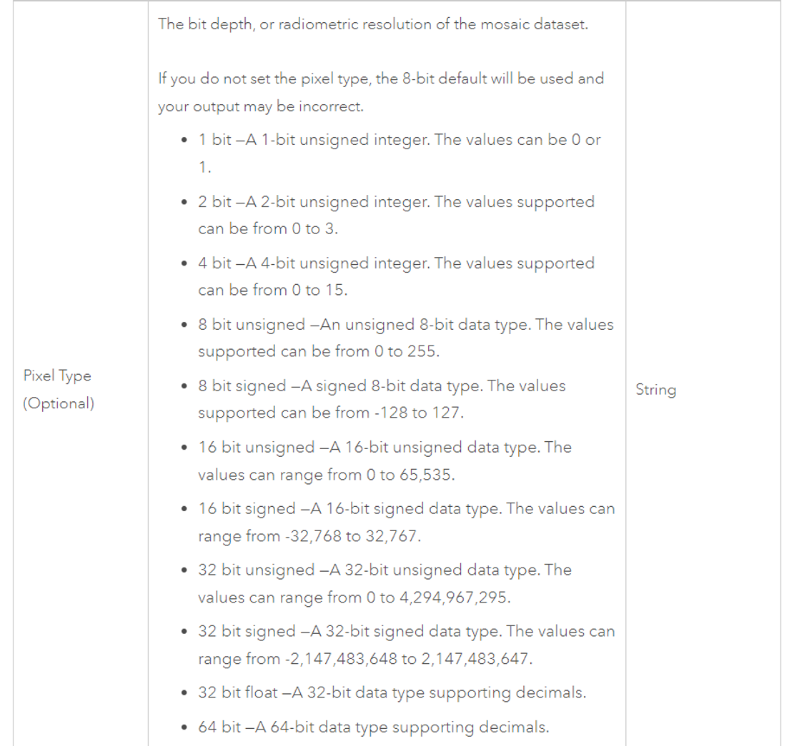
Q6: Based on the description of the pixel type parameter and the retrieval of the data, which is the most suitable pixel type for our new raster and why?
Similarly, you may wish to know what the Mosaic Operator and the options contained therein all mean. You can get an explanation by browsing this page or by clicking on the blue hints in front of the parameters.
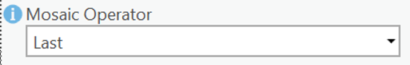
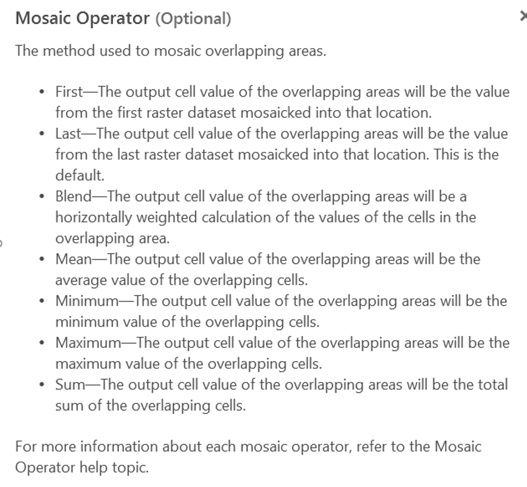
In this case, there is no overlap between our data so we can leave this parameter unselected and leave it as default. But this parameter is very important for this tool, and in future work you may need to save the overlap you want with these options.
Note: You can find specific descriptions of this and many more tools provided by ESRI at this site, which is very helpful for learning and exploring the use of more tools and functions.
Select the pixel type you think is most appropriate and fill 1 in the blank at the number of bands. Finally, click the “Run” button in the bottom right corner. Then a layer like this should appear on your map.
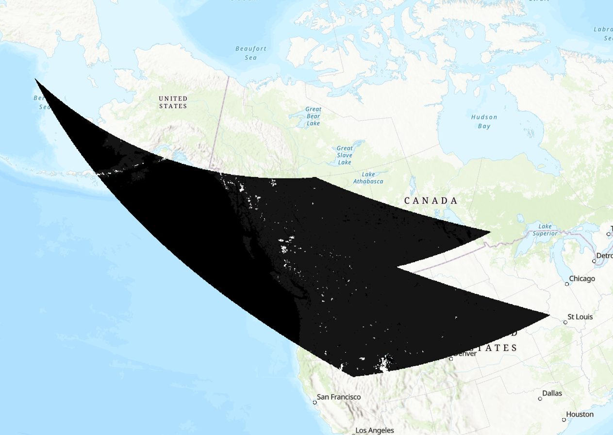
Note: The size and shape of the graph may vary, due to the amount of data downloaded.
Step 4: As you can see, the newly synthesized raster data is significantly larger than the BC province, and this write section is redundant. Therefore, we have to delete this part of the data. However, the burn data is a raster data and we have to take a different approach than above.
Step 5: We need to crop the burning data with the boundary data of BC, which will use the “Extract By Mask” tool. You can open this tool in the same way as above. Then follow the requirements below to fill each parameter and you can quickly select the layer to add to the map by clicking on it.
- Input raster: Burn_Data
- Input raster or feature mask data: BC_Boundary
- Output raster: Burn_BC
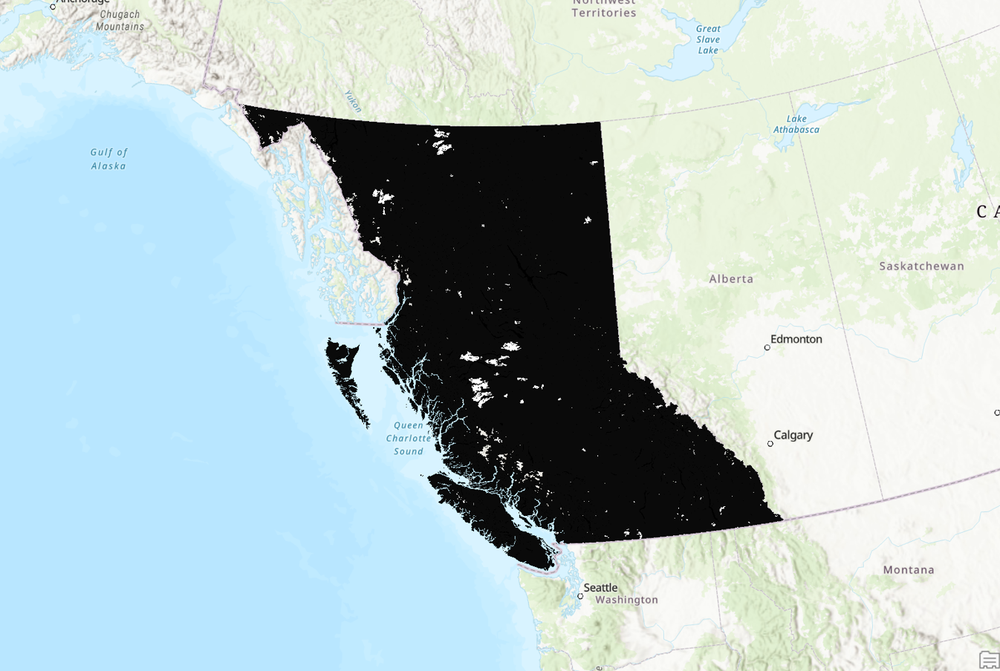
Note: The colors are automatically set by ArcGIS Pro, so your colors may be different from those shown above.